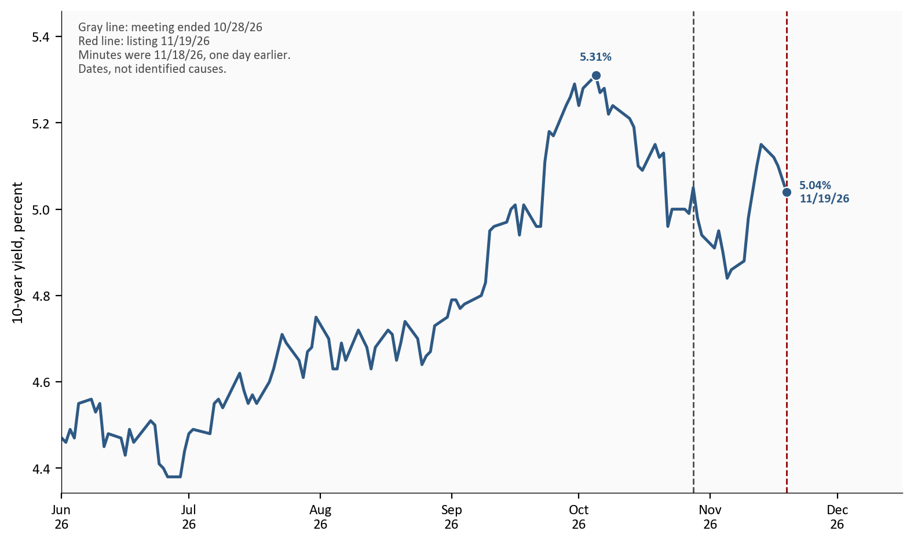

The Fed Discussed AI Inflation Pressure and Financing Risk
The funds rate stayed at 3.75 to 4 percent. Minutes discuss AI inflation pressure and a financing scenario. The 10-year yield was 5.04 percent on November 19.
economics
federal reserve
fomc
interest rates
markets
data visualization
Author
Yoram Gilboa
Published
November 21, 2026
Many participants discussed AI investment as a source of inflation pressure. Demand for products used in the buildout was straining supply and raising prices of technology-related consumer goods. In the same record, the staff said leasing that does not appear as an ordinary loan, and financing between related AI firms, could magnify losses if the investment returns disappointed. Almost all participants commented on that disappointing-returns scenario, and many commented on an AI-related revaluation of asset prices should one occur. Those financing comments are conditional on the returns disappointing. The minutes of the October meeting are the source for this account.
The Committee met on 10/27/26 and 10/28/26. The minutes release notice is dated 11/18/26, and it says the descriptions use only information available at the meeting. Anthropic’s initial public offering (IPO), the company’s first sale of shares to public investors, began trading the next day, 11/19/26. That order does not establish what caused the price changes. The minutes do not name Anthropic or this offering.
The target range for the federal funds rate, an overnight interest rate on loans between banks, stayed at 3.75 to 4.00%. 10 voting members favored leaving the rate unchanged; 2 favored a quarter-percentage-point increase. The October decision statement records that vote. The participant counts above are the discussion. The vote counts are the members who set the range.
NoteReproducing this analysis
The Python code used to generate each chart is included in this post. Click on any code block to see the full implementation. The complete data pipeline includes:
01_fetch_data.py checks the saved FRED vintages and does not download
02_clean_data.py writes the cleaned yield file the chart plots
04_compute_stats.py writes the figures quoted in the text, including the listing comparisons
The 10-year yield uses the 11/20/26 H.15 vintage and ends on 11/19/26. Listing prices are transcribed market reports, with the source links beside the price comparison. The pipeline still checks the CPI, PPI, and PCE files behind the one-paragraph backdrop. The default command checks the saved files and does not download a new copy.
NoteNote on data
The inflation figures in the bridge are the same locked October prints as the November 14 post. This post does not fill the missing CPI year rate. The 10-year yield is an official series. The vintage date and the last observation date are different, and a link to the live series is not a copy of the saved vintage. Listing prices are market reports through 11/20/26. October PCE is not yet released.
Fed policy interest rate
3.75 to 4.00%
Target range set 10/28/26
10-year Treasury yield
5.04%
Observed 11/19/26
First trade above offering price
+34.3%
$111.50 first trade; $83.00 offer
Second-day stock-price change
-8.5%
$88.91 versus $97.17 at the previous close
The yield card is an annualized rate observed on 11/19/26, not a one-day return and not the 11/20/26 vintage date. The offering price is the price paid by investors allocated shares in the IPO. It is not the price paid by every later buyer. The stock-price card compares the 11/20/26 close with the previous close on 11/19/26.
The inflation prints are unchanged
October prices rose, but the annual CPI comparison is missing already covered the October inflation prints. In October 26, consumer prices rose 0.4% and core prices rose 0.3%. There is still no official 12-month CPI rate, because October 2025 was not collected. Producer prices rose 6.5% over the year. CPI was released 11/10/26 and PPI 11/13/26, both after the decision on 10/28/26. Those prints have not changed. They are background, not a new result.
What the minutes say
The policy judgment
Most participants supported holding the target range at this meeting. Many of them wanted more information before deciding the stance that would return inflation to the Committee’s 2% goal. The staff estimate in hand was that total PCE inflation was 3.6% in September 26. Most participants said inflation pressures were broad based. Many called the AI buildout a material source of inflation risk. Many also observed that demand for those products was straining supply and raising prices. Those comments are about prices. They are separate from the valuation scenario below, and the October minutes record them.
For the months ahead, almost all participants judged that further increases would likely be appropriate under baseline outlooks broadly consistent with the September projections. That projection’s median funds rate at the end of 26 was 4.1% in the September Summary of Economic Projections. A couple of participants said an increase of more than a quarter point could warrant consideration at the next meeting if the inflation data were unfavorable. Participants also said later decisions would depend on the incoming data, the outlook, and the balance of risks. The judgment is conditional. It is not a vote on the December meeting. The October minutes record that judgment.
Financial-stability comments
The staff briefing used severe scenarios, not a forecast that those scenarios would occur. The staff highlighted how fast debt tied to the AI buildout had grown. Some of that financing is leasing that does not appear as an ordinary loan, and some of it runs between related AI firms. The staff’s point was that those links could magnify losses if the investment returns disappointed. Elevated asset valuations and hedge-fund leverage were the vulnerabilities the staff called most salient. Stronger bank and household balance sheets were described as a buffer. The staff did not report that an AI bubble had been established. This paragraph follows the staff assessment in the minutes.
In the discussion that followed, almost all participants commented on the disappointing-returns scenario, and many commented on an AI-related revaluation of asset prices should it occur. Most observed that AI-related debt had grown quickly, much of it through financing structures that are complex and hard to see through. Several participants said financial conditions were still supportive of growth, citing elevated equity valuations and widely available credit. A majority, though, noted tighter conditions since the September meeting, including wider credit spreads for some higher-risk and AI-related borrowers. Several stressed that monetary policy was not the right tool for addressing financial-stability risk directly. This paragraph follows the participants’ discussion in the minutes.
What the manager reported about markets
The manager’s account covers the intermeeting period, which ended before 10/28/26. It is not a description of the listing. On net, the manager said nominal Treasury yields were little changed over that window, after a rise into early October on stronger data and a later pullback. In that account, the pullback came with uncertainty about AI firms’ revenue and about the pace of data-center construction, and with concern over French government debt. Equity prices in the AI infrastructure segment rose earlier in the period. Risk sentiment then worsened after two leading AI firms reported revenue growth below what investors expected, and after a hyperscaler laid out spending plans that needed more financing than investors had anticipated. The minutes do not give those firms’ names. The manager also said that a higher rate level had already been weighing on equity prices and raising credit spreads before this intermeeting period. This paragraph follows the market manager’s account in the minutes.
The yield backdrop
The official series in the 11/20/26 H.15 vintage ends on 11/19/26. The last observation is 5.04%. The vintage date and that observation date are not the same, and the file has no yield for 11/20/26. The live DGS10 series may contain later observations or revisions. That page is the current series, not a frozen copy of the saved vintage. The high in this file is 5.31% on 10/5/26, before the meeting. The yield was 5.05% on the decision date, 4.86% on 11/6/26, and 5.07% when the minutes came out.
A nominal Treasury yield mixes expected short-term rates, compensation for inflation, and a term premium. This post does not split those parts. A higher discount rate lowers the present value of cash flows that arrive far in the future, but a Treasury yield is not the whole required return on an equity. The path does not show that this mechanism produced the two closes.
The blue line is the 10-year Treasury yield. The labeled peak is the high in this window. The gray line is the meeting decision, and the red line is the first trading day. The minutes were released one day before that red line. One day is too narrow to draw as its own mark on this window.
Show code
# Cleaned H.15 yields only. Holiday blanks stay off the line because the axis is a date.yields = pd.read_csv(CLEAN_DIR /"yields_daily.csv", index_col="date", parse_dates=True)yields = yields.loc["2026-06-01":].dropna(subset=["dgs10"])fig, ax = plt.subplots(figsize=(8.0, 4.8))ax.plot(yields.index, yields["dgs10"], color=COLORS["primary"])high_x = yields["dgs10"].idxmax()high_y =float(yields.loc[high_x, "dgs10"])last_x = yields.index.max()last_y =float(yields.iloc[-1]["dgs10"])for x_val, y_val in ((high_x, high_y), (last_x, last_y)): ax.scatter([x_val], [y_val], s=40, color=COLORS["primary"], edgecolor="white", linewidth=0.8, zorder=4)ax.annotate(f"{high_y:.2f}%", xy=(high_x, high_y), xytext=(0, 8), textcoords="offset points", color=COLORS["primary"], fontsize=8, fontweight="bold", ha="center", va="bottom", annotation_clip=False, zorder=5,)ax.annotate(f"{last_y:.2f}%\n{short_stamp(last_x)}", xy=(last_x, last_y), xytext=(8, 0), textcoords="offset points", color=COLORS["primary"], fontsize=8, fontweight="bold", ha="left", va="center", annotation_clip=False, zorder=5,)meeting = pd.to_datetime(stats["fomc_decision_date"], format="%m/%d/%y")listing = pd.to_datetime(stats["ipo_open_date"], format="%m/%d/%y")ax.axvline(meeting, color=COLORS["neutral"], linewidth=1.0, linestyle="--", zorder=1)ax.axvline(listing, color=COLORS["accent"], linewidth=1.0, linestyle="--", zorder=1)ax.set_ylabel("10-year yield, percent")ax.xaxis.set_major_locator(mdates.MonthLocator())ax.xaxis.set_major_formatter(plt.FuncFormatter(month_tick))start, end = yields.index.min(), yields.index.max()ax.set_xlim(start, end + (end - start) *0.16)y_min =float(yields["dgs10"].min())y_max =float(yields["dgs10"].max())pad = (y_max - y_min) *0.16ax.set_ylim(y_min - pad *0.25, y_max + pad)ax.text(0.02,0.98, (f"Gray line: meeting ended {stats['fomc_decision_date']}\n"f"Red line: listing {stats['ipo_open_date']}\n"f"Minutes were {stats['minutes_date']}, one day earlier.\n""Dates, not identified causes." ), transform=ax.transAxes, fontsize=8, color=COLORS["neutral"], ha="left", va="top", bbox={"boxstyle": "round,pad=0.25", "fc": "#fafafa", "ec": "none", "alpha": 0.92}, zorder=5,)plt.tight_layout()fig.savefig(IMG_DIR /"yield-backdrop.png", dpi=150, bbox_inches="tight")

Figure 1: The 10-year yield ended this H.15 vintage at 5.04 percent on November 19. The gray line marks the meeting decision. The red line marks the first trading day, the day after the minutes. The marks are dates, not identified causes.
Source: FRED DGS10, saved H.15 vintage 11/20/26, through 11/19/26. The live page can add later observations or revisions. Meeting and release dates: the FOMC minutes and the minutes release notice.
The reported price path
The second close was $88.91 on 11/20/26. That was -20.3% versus the first trade of $111.50, and +7.1% versus the offering price of $83.00. The second close was below the first trade, and it remained above the offering price. The table carries the other baselines. The saved reports stop on 11/20/26.
Each change uses the baseline in that row. Buying at the offer and buying at the open are different starting points.
Comparison
Change
Baseline
Offer to open
+34.3%
First trade versus the offering price
Open to first close
-12.9%
First close versus the first trade
Close to close
-8.5%
Second close versus the first close
Open to second close
-20.3%
Second close versus the first trade
Offer to second close
+7.1%
Second close versus the offering price
The Forbes report on the first session states the offering price, the first trade, and the first close in the article text. That page also records earlier prices from the same session. On the Motley Fool page for the second session, the close used here appears with the label “As of 4:00 p.m. ET.” The article sentence on that page describes a decline as of 11:15 a.m. ET, which is a different observation. The notes saved with this draft do not record that split, and the draft does not keep a copy of either page.
Gray is the offering price, red is the first trade, blue is the first close, and orange is the second close. The offer is the primary sale. The other three bars are secondary-market reports.
Figure 2: The four reported prices are the offering price, the first trade, the first close, and the next session’s close. The offer is the primary sale price, not a secondary-market trade.
The minutes establish a dated record. Participants discussed the disappointing-returns scenario, and many discussed an AI-related revaluation should it occur, at the meeting that ended 10/28/26. That record became public on 11/18/26. Trading began on 11/19/26, with the 10-year yield at 5.04% on the last day in the vintage. The four reported prices show an open above the offer, a second close below the first close, and a second close still above the offer.
The same record does not establish that participants discussed this offering, that publishing the minutes caused the two closes, or that a revaluation had been found rather than talked about as a scenario. Two sessions cannot separate cash-flow news from discount rates, or from any other report that arrived with them.
October PCE, due 11/25/26, is the next official reading of the index in the Fed’s 2% goal. It can update the inflation picture the Committee will have before the meeting on 12/8/26 to 12/9/26. It will not identify why these two closes printed where they did. This post does not guess that vote.
Limitations
The minutes are a summary. “Almost all,” “many,” and “most” are the Federal Reserve’s own counts, not a roll call a reader can recompute. The text does not name Anthropic.
The yield file ends on 11/19/26 because that is the last observation in the 11/20/26 H.15 vintage. The second trading day is not in it. Listing prices are market reports, and another outlet’s figure for the same session can differ. A comparison with the offer is not the gain earned by every holder.
CPI and PPI for October were released after the meeting. Reading the minutes as a comment on those prints misdates the discussion.
Methodology & Data
The charts plot the cleaned yield column and the transcribed listing prices. They do not recompute those prices. The listing comparisons in the text are written by the stats step from those transcribed prices. The inflation figures in the bridge come from the same locked vintages as the November 14 post and are not re-estimated here.
Sources for this follow-up. The bridge uses the October CPI and PPI prints only as background.
Series
What it measures
Source
October CPI month and the missing year rate
Unchanged backdrop. This post does not re-estimate it.
FRED DGS10. Saved H.15 vintage 11/20/26, last observation 11/19/26. The live page can contain later observations or revisions.
Listing prices
Reported offer, open, and two closes
First-session article text and the second-session quote label, linked beside the comparison table. Not an official series.
References
Federal Reserve documents. The October decision statement records the target range and the vote. The October minutes record the staff assessment, the participants’ discussion, and the market manager’s account. The minutes release notice gives the publication date. The September projections are the source for the median funds rate only.
Treasury-yield data.FRED DGS10 is the live constant-maturity series. This post plots the saved H.15 vintage of 11/20/26, through 11/19/26. The live page can show later observations or revisions.
Listing-price reports. The Forbes report on the first session states the offering price, the first trade, and the first close. The Motley Fool page on the second session is the source for the second close. The price section says which figures come from article text and which come from the quote label.
Data current as of 11/20/26. Minutes of the meeting that ended 10/28/26 were released 11/18/26. The 10-year yield uses the 11/20/26 H.15 vintage and ends 11/19/26. October PCE is not yet released.